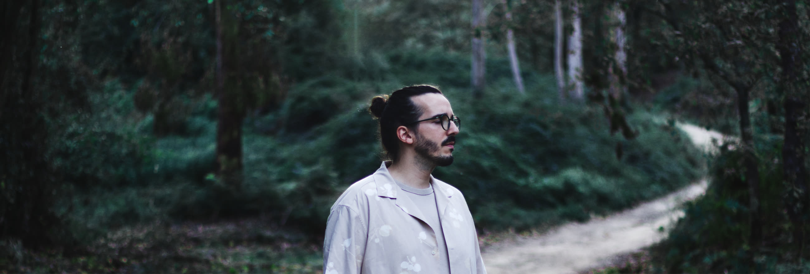
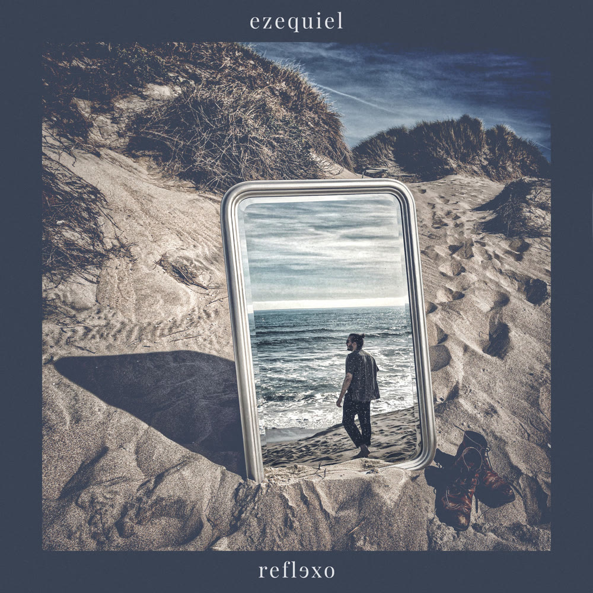
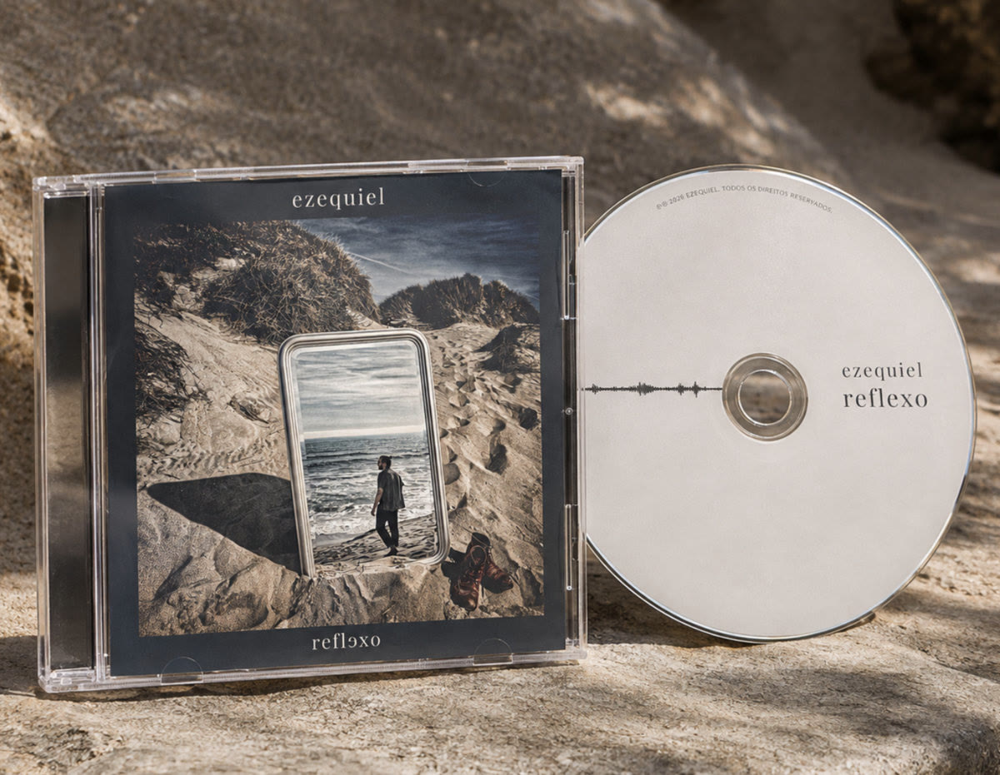
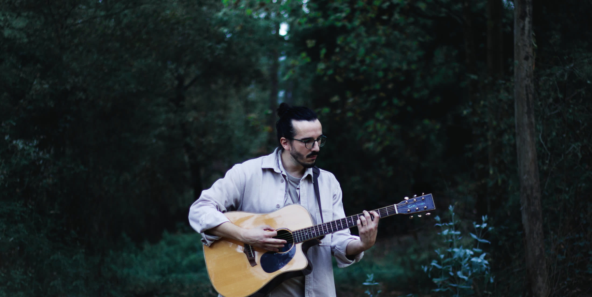

álbum de estreia 2026
Reflexo
Nove canções originais, num universo indie folk cantado em português que percorre um território íntimo e atento ao quotidiano. Um disco que não nasce da urgência de dizer tudo, mas da necessidade de dizer o essencial.
CD com booklet e artwork de Alexandra Fernandes. Inclui o álbum digital. Edição física disponível apenas no Bandcamp.
faixasexcertos de 40 s
Escrito e composto por Ezequiel. Produção e mistura de Rolando Ferreira. Bateria de Pedro Oliveira.

«Durante muito tempo fiquei preso num ciclo de busca por uma perfeição que sabia que nunca iria encontrar.»
vídeos
sobre
Ezequiel é um cantautor português. A sua música assenta na canção e na palavra, num universo indie folk onde a língua portuguesa é o território natural da sua escrita e a abordagem criativa assume riscos sem perder intimidade.
Em 2026 edita Reflexo, o seu álbum de estreia. O disco nasce após um período prolongado de silêncio, observação e redefinição pessoal, acompanhando um percurso marcado por conflito interno, inquietação e amadurecimento. Ao longo do álbum, a experiência pessoal cruza-se com uma observação atenta do mundo que o rodeia, sempre com a palavra como eixo e com uma escrita livre e assumidamente arrojada.
Depois da experiência com os Quarto C, com quem editou Casa EP (2014), o músico fafense lançou em 2019 o seu primeiro EP a solo, Homem: oriente, inteiramente escrito, gravado e produzido pelo próprio, de uma forma que dificilmente poderia ser mais independente. Pelo meio, um doutoramento e vários projetos ligados ao som para cinema. Agora, aos 34 anos, este regresso aos discos não é um começo, mas uma depuração: um ponto de chegada de vários anos de escrita, pausa e transformação.
Sem se posicionar como um exercício de intervenção, Reflexo propõe um retrato honesto de quem atravessa mudanças e procura compreender o seu lugar no tempo em que vive, assumindo que a resiliência também se constrói a partir de pequenos gestos e decisões imperfeitas.
O resto da história
está no disco.